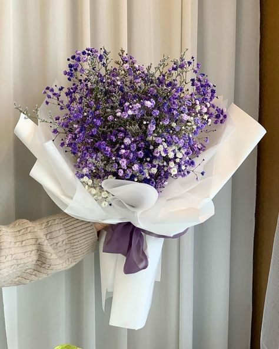

Lilies
Elegant, fragrant flowers that add a touch of luxury.
Lilies are known for their large, vibrant blooms and sweet fragrance. Perfect for any occasion, they
symbolize purity, renewal, and devotion. With their wide range of colors, lilies can brighten any room
or bouquet.
Price: Starting at $18.99
Availability: Available year-round.
Special Offer: 🌻 Buy 2, Get 1 Free – Brighten up your home with even more sunflowers!
Call to Action: 🌻 Shop Now – Spread joy with beautiful sunflowers today!
Sunflowers
Bright and cheerful blooms that bring warmth to your space.
Sunflowers are known for their large, golden petals and bold appearance. These cheerful flowers
symbolize happiness, loyalty, and adoration. Their vibrant color and size make them a standout in any
bouquet or as a standalone flower.
Price: Starting at $12.99
Availability: Available seasonally, mostly in late summer and fall.
Special Offer: 🌹 Get 15% Off on All Rose Bouquets – Show your love with timeless roses!
Call to Action: 🌹 Shop Now – Bring the elegance of roses into your life!
Tulips
Elegant, colorful blooms that brighten any space.
Tulips are one of the most beloved spring flowers, known for their vibrant colors and sleek, graceful
petals. They come in a variety of shades, from bright reds to soft pastels, making them perfect for any
occasion. Whether you're celebrating love, friendship, or simply adding a pop of color to your home,
tulips are the ideal choice.
Price: Starting at $10.99
Availability: Available seasonally, typically in spring.
Special Offer: 🌸 Buy One Bouquet, Get 20% Off Your Next Purchase!
Call to Action: 🌸 Shop Now – Add elegance to your space with beautiful lilies!
Roses
Classic symbols of love and passion.
Roses are timeless and one of the most popular flowers worldwide. Their rich, velvety petals come in a
variety of colors, each symbolizing something special. Whether it's romance, friendship, or admiration,
a rose always speaks from the heart.
Price: Starting at $15.99
Availability: Available year-round, but peak season is summer.
Special Offer: 🌷 Get 10% Off Tulip Bouquets for a Limited Time!
Call to Action: 🌷 Shop Now – Bring home the beauty of tulips today!
Orchids
Luxurious and exotic flowers that symbolize beauty and strength.
Orchids are one of the most exotic and sophisticated flowers available. Known for their intricate
patterns and delicate petals, orchids make stunning gifts and can bring elegance and luxury to any
setting.
Price: Starting at $24.99
Availability: Available year-round, often as potted plants.
p class="p">
Special Offer: 🌸 Buy One Orchid, Get a Free Flower Care Kit!
Call to Action: 🌸 Shop Now – Add a touch of luxury with exquisite orchids!
Daisies
Simple, cheerful flowers that symbolize purity and innocence.
Daisies are known for their bright, white petals and cheerful demeanor. They represent purity,
innocence, and new beginnings, making them perfect for any celebration or as a symbol of love and joy.
Price: Starting at $9.99
Availability: Available year-round.
p class="p">
Special Offer: 🌸 Buy One Orchid, Get a Free Flower Care Kit!
Call to Action: 🌸 Shop Now – Add a touch of luxury with exquisite orchids!
Peonies
Luxurious and fragrant flowers that symbolize prosperity and good fortune.
Peonies are beloved for their full, lush blooms and sweet fragrance. They are often associated with
romance, beauty, and abundance. Their rich colors and large petals make them a favorite for weddings and
special occasions.
Price: Starting at $22.99
Availability: Seasonal, typically available in late spring and early summer.
p class="p">
Special Offer: 🌸 Buy One Orchid, Get a Free Flower Care Kit!
Call to Action: 🌸 Shop Now – Add a touch of luxury with exquisite orchids!
Lavender
Soothing, fragrant blooms that promote relaxation and calm.
Lavender is a favorite for its calming fragrance and soft purple hue. Known for its therapeutic
qualities, lavender symbolizes purity, calmness, and tranquility. It's perfect for creating a peaceful
atmosphere in your home or giving as a thoughtful gift.
Price: Starting at $14.99
Availability: Available year-round, but best in summer.
p class="p">
Special Offer: 🌸 Buy One Orchid, Get a Free Flower Care Kit!
Call to Action: 🌸 Shop Now – Add a touch of luxury with exquisite orchids!
🌷💖 Delight in the soft elegance of pink tulips, a symbol of affection, grace, and good wishes.
Perfect for birthdays, anniversaries, or expressing heartfelt gratitude, these delicate blooms
add a touch of beauty to any occasion.
Their gentle blush of pink is sure to brighten anyone's day.🌸✨
Price: Starting at $12.99
Availability: Available seasonally, typically in spring.
🤝💐 Celebrate the beauty of friendship with our specially crafted Friendship Bouquets.
Bursting with vibrant colors and cheerful blooms, these arrangements are perfect for Friendship Day,
thank-you gifts, or simply letting your friends know you care.
Brighten their day with a heartfelt gesture that speaks volumes.🌼🌟
Price: Starting at $15.99
Availability: Available all year round.
🌸💖 Brighten someone's day with a colorful bouquet, perfect for lifting spirits in the hospital.
With a mix of vibrant blooms, this arrangement is designed to cheer up patients, celebrate
recoveries, or send love during difficult times.
Let the bright colors bring hope and positivity to those in need of a little extra joy.🌷🌞
Price: Starting at $18.99
Availability: Available all year round.
🌹💔 Express your heartfelt apologies with a beautiful bouquet that speaks louder than words.
Soft and sincere, these flowers are perfect for asking for forgiveness, making amends, or showing
regret.
Let the gentle blooms help heal the heart and restore your connection🌷💌 .
Price: Starting at $14.99
Availability: Available all year round.
🫠A stunning bouquet that combines the timeless beauty of fresh blooms with the indulgence of
premium chocolates.
Perfect for birthdays, anniversaries, this delightful pairing adds a sweet touch to your
thoughtful gift.
Choose your favorite flowers and chocolates for a truly unforgettable surprise.🌸🍫
Price: Starting at $14.99
Availability: Available all year round.

A stunning bouquet that combines the timeless beauty of fresh blooms with the luxury of cash
gifts.
Perfect for weddings, graduations, or special celebrations, this unique arrangement adds a
personal
touch to your thoughtful gesture. Choose your favorite flowers and let us craft an unforgettable gift.🌸
Price: Starting at $12.99
Availability: Available all year round.
🌹🫠Combine the timeless elegance of roses with the indulgence of luxurious chocolates
for a perfect gift.
Ideal for romantic gestures, anniversaries, or expressing love, this pairing creates an
unforgettable experience.
Let the beauty of roses and the sweetness of chocolates make your gesture truly special.💕✨
Price: Starting at $29.99
Availability: Available all year round.
🌸 A breathtaking bouquet that pairs the natural beauty of fresh flowers with the sentimentality
of cherished photographs.
Perfect for anniversaries, or memorial tributes, this unique arrangement creates a heartfelt and
lasting impression.
Share your favorite photographs, and we'll design a stunning floral display that tells your
story.🌸📸
Price: Starting at $19.99
Availability: Custom orders available all year round.
ğŸ’✨ A gorgeous bouquet that combines the elegance of fresh flowers with the sparkle of a timeless
ring.
Perfect for engagements, proposals, or anniversaries, this arrangement makes your special moments
truly unforgettable.
Let love bloom as you surprise your loved one with this stunning gift.🌹💎
Price: Starting at $49.99
Availability: Custom orders available all year round.
🌹💖 A stunning blend of pink and red roses, symbolizing love, admiration, and passion.
Perfect for romantic occasions, anniversaries, or heartfelt expressions of love, these roses make
a powerful statement.
Let the deep red and soft pink hues convey your deepest emotions in the most beautiful way.💕✨
Price: Starting at $24.99
Availability: Available all year round.
💜🌸 A breathtaking purple bouquet, symbolizing royalty, elegance, and mystery.
Perfect for special occasions, weddings, or expressing admiration and respect, these flowers
create a sophisticated and enchanting atmosphere.
Let the regal purple hues add a touch of luxury and charm to any event or celebration.👑✨
Price: Starting at $19.99
Availability: Available all year round.
💖🌸 Elegant pink lilies, the symbol of purity, love, and commitment.
Perfect for weddings, anniversaries, or celebrating new beginnings, these delicate blooms add a
touch of grace and beauty to any occasion.
Let the soft pink petals and sweet fragrance enhance your special moments and create lasting
memories.ğŸ’✨
Price: Starting at $22.99
Availability: Available all year round.

💜🌿 Beautiful lavender purple flowers, known for their calming fragrance and delicate beauty.
Perfect for baby showers, thank-you gifts, or adding a touch of serenity to any space, these
flowers bring peace and relaxation.
Let the soft lavender hues create a soothing atmosphere and offer a gentle reminder of tranquility and
love.🌸✨
Price: Starting at $18.99
Availability: Available all year round.

🌈💠Add a splash of vibrance with our colorful bouquet covers, designed to make your flowers
stand out even more.
Perfect for celebrations, birthdays, or just to brighten someone's day, these covers bring extra
charm and personality to every arrangement.
Choose from a variety of colors and patterns to match your style or occasion.🎨✨
Price: Starting at $5.99
Availability: Available all year round.
🤍💜 A graceful combination of white roses and purple flowers, symbolizing purity,
elegance, and mystery.
Perfect for weddings, or celebrating love and admiration, this arrangement adds
sophistication and charm to any occasion.
Let the contrast of white and purple create a stunning and timeless display of beauty and grace.🌷✨
Price: Starting at $27.99
Availability: Available all year round.
🌹📸 A heartfelt combination of roses and cherished photographs, perfect for preserving
memories in the most beautiful way.
Ideal for anniversaries, special celebrations, or memorial tributes, this bouquet brings together
love and nostalgia.
Add your favorite photos, and let the roses tell a story of love, friendship, or unforgettable
moments.💌✨
Price: Starting at $34.99
Availability: Custom orders available all year round.
🌹📸 A heartfelt combination of roses and cherished photographs, perfect for preserving
memories in the most beautiful way.
Ideal for anniversaries, special celebrations, or memorial tributes, this bouquet brings together
love and nostalgia.
Add your favorite photos, and let the roses tell a story of love, friendship, or unforgettable
moments.💌✨
Price: Starting at $34.99
Availability: Custom orders available all year round.
🌹📸 A heartfelt combination of roses and cherished photographs, perfect for preserving
memories in the most beautiful way.
Ideal for anniversaries, special celebrations, or memorial tributes, this bouquet brings together
love and nostalgia.
Add your favorite photos, and let the roses tell a story of love, friendship, or unforgettable
moments.💌✨
Price: Starting at $34.99
Availability: Custom orders available all year round.